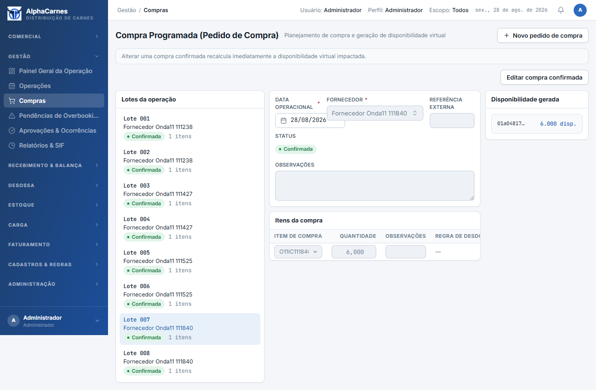
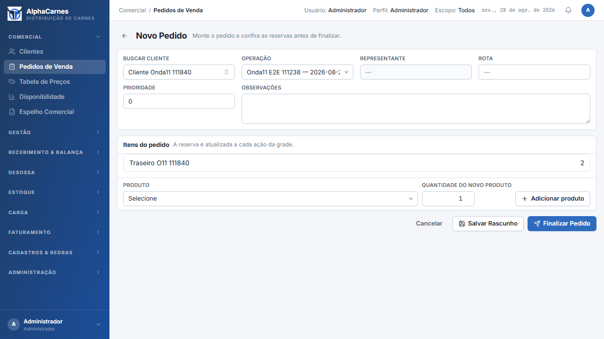
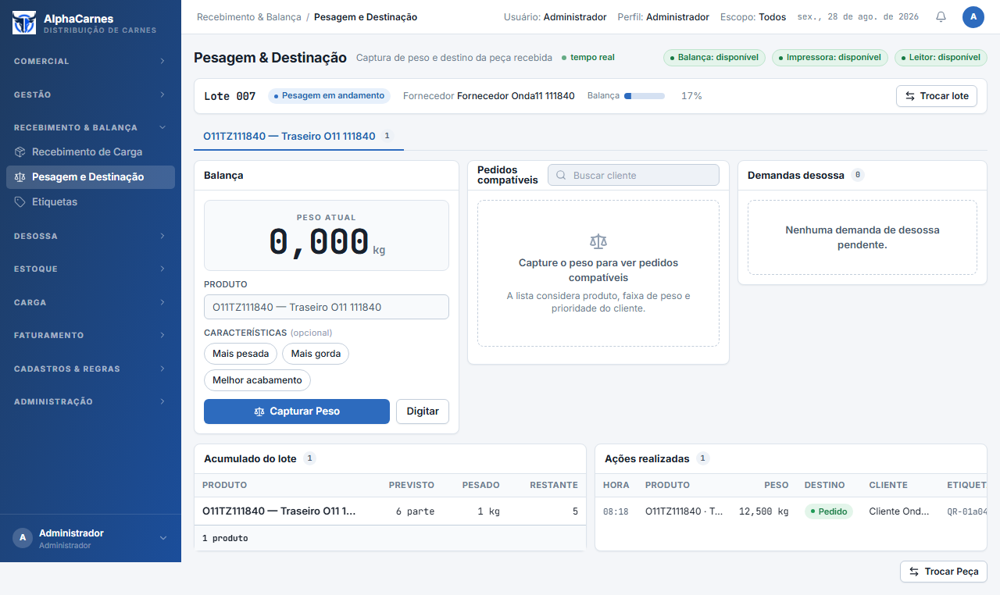
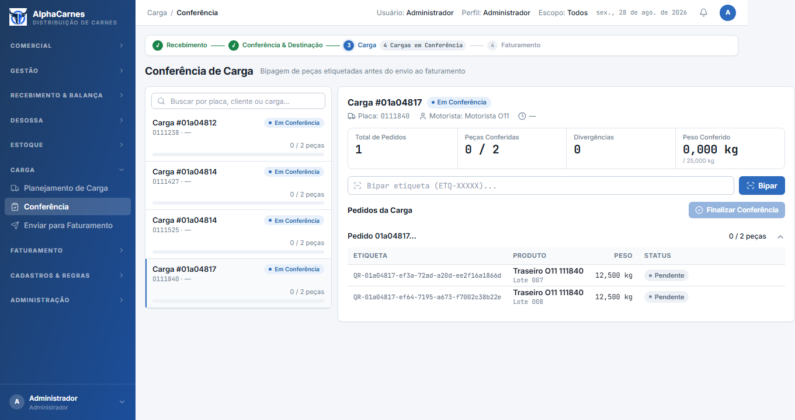

Referência visual: AD-10 / DS v3 (docs/ds-preview/direcao-a/). Protótipo v1.1 não foi exigido.
| SHA | 1c96973f64835ac0a9217eeebd52d0bc3ecdd323 |
|---|---|
| Data | 2026-08-28T11:18:45.937Z |
| Run | 20260828111840 |
| Operação | 01a04812-5d84-7988-aef9-88153103c14f · 2026-08-28 |
| Compra 001 | 01a04817-e3b1-7637-a0ac-50907fe9d7e5 · Lote 007 |
| Compra 002 | 01a04817-e3d7-756c-83d7-abc9fed4b94b · Lote 008 |
| Pedido | 01a04817-eee2-79b8-8693-c27e0e9d7946 |
| Recebimentos | 01a04817-e40f-7aef-8146-00a5243b9730 / 01a04817-e437-7f86-af9d-8868b1bde870 |
| Caminhão | 01a04817-f51b-71c0-aeb9-061a8a44820d |
HARDWARE_FAKE=1 NFSE_FAKE=1 npm ci / lint / type-check / test app/backend: npm run test:cov ; npx drizzle-kit check app/frontend: npm test ; npx playwright test e2e/onda5-gestao.spec.ts e2e/onda11-multicompra.spec.ts docker compose up --build -d
Playwright O11 URLs: http://localhost:4000/gestao/compras?dataOperacao=2026-08-28&compraId=01a04817-e3b1-7637-a0ac-50907fe9d7e5 · http://localhost:4000/comercial/pedidos · http://localhost:4000/recebimento/pesagem-destinacao?recebimentoId=01a04817-e40f-7aef-8146-00a5243b9730 · http://localhost:4000/carga/conferencia




v1.1 §16.12: o payload/layout físico não possui campo canônico de lote; inclusão exige decisão registrada. Onda 11 preserva o layout.
{kind=link}
{kind=link}
{kind=link}
{kind=link}